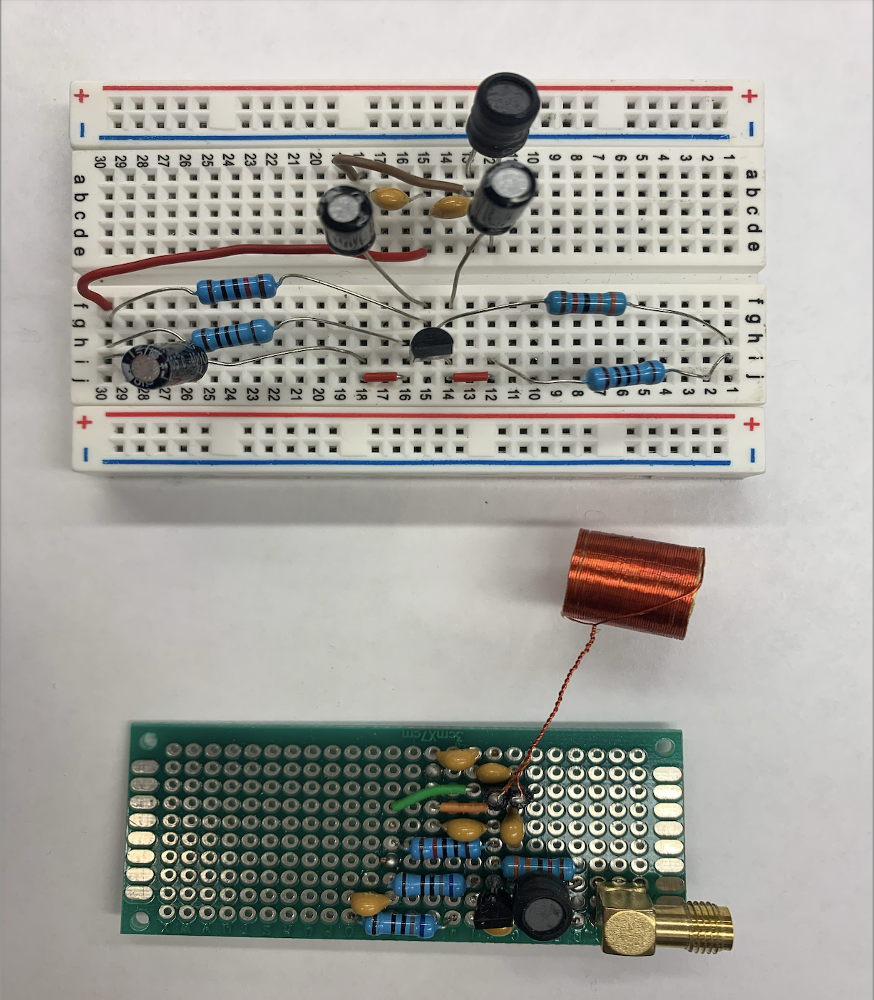
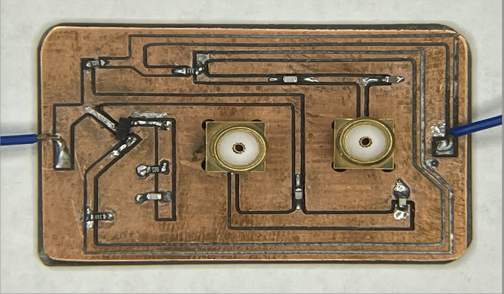

AC Magnetic Characterization of Quantum Materials at Cryogenic Temperatures
Abstract
AC magnetic measurements with a self-oscillating LC circuit and its application to university education
Understanding the magnetic properties of matter plays a key role in materials physics. However, university education on fundamental magnetism is limited to a theoretical survey because of the lack of appropriate apparatus that can be applied for laboratory courses at the undergraduate level. In this work, we introduce an AC magnetometer based on the Colpitts self-oscillator with an inductor coil as a probe. We show that this type of self-oscillator can be adopted in a typical university laboratory course to learn the principles of magnetic measurement and to understand the fundamental magnetism of matter. We demonstrate the exceptional stability of the circuit with a working frequency range of ~10 kHz to 10 MHz and excellent performance to detect the diamagnetic signal from a superconductor at cryogenic temperature.
Objective
- To design and implement a high-precision, low-cost AC magnetometer for material characterization.
- To provide an accessible experimental platform for undergraduate-level physics education on fundamental magnetism.
- To validate the circuit's sensitivity by detecting phase transitions in superconducting materials at cryogenic temperatures.
Methodology
Circuit Design and Implementation:

- Developed a Colpitts-style self-oscillator utilizing Bipolar Junction Transistors (BJT) to maintain stable oscillations.
- Utilized an LC tank circuit as the frequency-determining element, where the inductor (L) serves as the sensing probe for magnetic samples.
- Selected component values to ensure a wide tunable frequency range (10 kHz to 10 MHz), allowing for the study of frequency-dependent magnetic responses.
- Implemented a simple power supply and signal output interface compatible with standard laboratory oscilloscopes and frequency counters.
Sensing Mechanism:
- The operating principle relies on the shift in the inductor's resonance frequency (Δf) when a magnetic sample is inserted.
- The frequency change is directly related to the magnetic susceptibility (χ) of the sample, as the sample alters the effective permeability and thus the inductance of the probe.
- The circuit was designed to achieve high frequency stability (potential precision of 0.001 ppm), enabling the detection of minute changes in magnetism.
Cryogenic Measurement Setup:

- Constructed a "dipper-type" probe to allow the inductor and sample to be submerged in cryogenic fluids like liquid nitrogen (77 K).
- Conducted tests to ensure the BJT-based oscillator remained functional at low temperatures, noting that while the oscillation amplitude decreases at 77 K, signal quality remains sufficient for measurement.
Validation and Data Analysis:
- Used a YBCO (Yttrium Barium Copper Oxide) high-temperature superconductor as a test sample.
- Monitored the resonance frequency while cooling the sample through its transition temperature (Tc).
- Calculated the magnetic susceptibility based on the observed frequency jump, providing a clear visual and quantitative demonstration of the Meissner effect (perfect diamagnetism).
Results and Discussion
- The circuit demonstrated exceptional stability over hours of operation at both room and cryogenic temperatures.
- Cryogenic testing with YBCO revealed a sharp frequency increase at approximately 82 K, marking the onset of the superconducting state.
- The experiment proved that a transistor-powered oscillator can effectively replace more expensive commercial magnetometers (like SQUIDs) for educational and fundamental research purposes.
Conclusion
- The Colpitts self-oscillator is a robust and sensitive tool for investigating the magnetic properties of matter.
- The project successfully established a cost-effective experimental framework that bridges the gap between theoretical magnetism and hands-on laboratory experience.